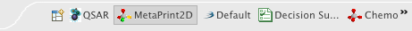

The Bioclipse Perspective bar contains the open perspectives. If a perspective is noot available here, you may click the leftmost icon "Open Perspective" in order to get a list of all available perspectives.